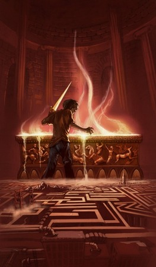

Primeiro volume da saga Percy Jackson e os olimpianos, O ladrão de raios esteve entre os primeiros lugares na lista das séries mais vendidas do The New York Times . O autor conjuga lendas da mitologia grega com aventuras no século XXI. Nelas, os deuses do Olimpo continuam vivos, ainda se apaixonam por mortais e geram filhos metade deuses, metade humanos, como os heróis da Grécia antiga. Marcados pelo destino, eles dificilmente passam da adolescência. Poucos conseguem descobrir sua identidade.
O garoto-problema Percy Jackson é um deles. Tem experiências estranhas em que deuses e monstros mitológicos parecem saltar das páginas dos livros direto para a sua vida. Pior que isso: algumas dessas criaturas estão bastante irritadas. Um artefato precioso foi roubado do Monte Olimpo e Percy é o principal suspeito. Para restaurar a paz, ele e seus amigos – jovens heróis modernos – terão de fazer mais do que capturar o verdadeiro ladrão: precisam elucidar uma traição mais ameaçadora que fúria dos deuses.
Nessa segunda aventura da série Percy Jackson e os olimpianos, Percy e seus amigos estão em busca do Velocino de Ouro, único artefato mágico capaz de proteger da destruição seu lugar predileto e, até então, o mais seguro do mundo: o Acampamento Meio-Sangue.
Um chamado do amigo Grover deixa Percy a postos para mais uma missão: dois novos meios-sangues foram encontrados, e sua ascendência ainda é desconhecida. Como sempre, Percy sabe que precisará contar com o poder de seus aliados heróis, com sua leal espada Contracorrente... e com uma caroninha da mãe. O que eles ainda não sabem é que os jovens descobertos não são os únicos em perigo: Cronos, o Senhor dos Titãs, arquitetou um de seus planos mais traiçoeiros, e nossos heróis serão presas fáceis. Um monstro ancestral foi despertado - um ser com poder suficiente para destruir o Olimpo -, e Ártemis, a única deusa capaz de encontrá-lo, desapareceu. Percy e seus amigos têm apenas uma semana para resgatar a deusa sequestrada e solucionar o mistério que ronda o monstro que ela caçava.
Divertidíssima e repleta de ação, essa terceira aventura da série coloca nosso herói e seus aliados frente a frente com o maior desafio de suas vidas: a terrível profecia da maldição do titã.

A Batalha do Labirinto
O Monte Olimpo está em perigo. Cronos, o perverso titã que foi destronado e feito em pedaços pelos doze deuses olimpianos, prepara um retorno triunfal. O primeiro passo de suas tropas será atacar e destruir o campo de treinamento dos heróis, filhos de deuses com mortais, que desde a Grécia Antiga combatem na linha de frente em defesa dos olimpianos.
Para assegurar que o refúgio de semideuses, o Acampamento Meio-Sangue, não seja invadido, Percy Jackson, Tyson, Annabeth e Grover são destacados para uma importante missão: deter as forças de Cronos antes que se aproximem do acampamento, no emaranhado de corredores do temido Labirinto de Dédalo – um interminável universo subterrâneo que, a cada curva, revela as mais aterrorizantes surpresas.
Os meios-sangues passaram o ano inteiro preparando-se para a batalha contra os Titãs, e sabem que as chances de vitória são pequenas. O exército de Cronos está mais poderoso que nunca, e cada novo deus ou semideus que se une à causa confere mais força ao vingativo titã.
Enquanto os Olimpianos se ocupam de conter a fúria do monstro Tifão, Cronos avança em direção à cidade de Nova York, onde o Monte Olimpo está precariamente vigiado. Agora, apenas Percy Jackson e seu exército de heróis podem deter o Senhor do Tempo.
Nesse quinto e último livro da série, o combate se acirra e o mundo que conhecemos está prestes a ser destruído. O destino da civilização está nas mãos do semideus anunciado na antiga profecia, e Percy está perto de completar dezesseis anos – a dúvida é: o herói será ou não capaz de tomar a decisão correta?